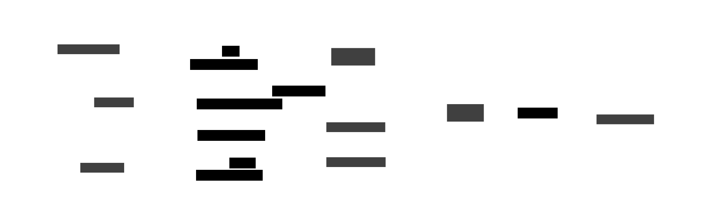

HuggingFace recently released ModernBERT (model, paper), an updated version of the BERT language model which backports many improvements from LLM research back to the classic 2018 model. In contrast to LLMs, ModernBERT is an encoder-only model that is fitted with a task-specific head outputting probabilities for structured NLP tasks, rather than tokens.
While LLMs with their decoder-only architecture were originally designed for text generation, they have also been used for structured NLP tasks like text classification. They are imbued with a large amount of general knowledge and excel at zero-shot and few-shot learning. Through the proliferation of the LLM ecosystem they are also widely available via APIs and familiar to many developers.
Here, I will compare ModernBERT to an LLM on a text classification task using the dimensions accuracy, speed, cost and ease of use. Text classification is a simple task, yet very common and important in NLP pipelines. It may also be coupled with text generation in a chat bot, such as for intent classification or as a guardrail to prevent undesirable responses.
Task: Adverse event classification
During my work in market research for pharmaceutical companies, I frequently have to monitor data for adverse events. An adverse event is any undesirable medical event that occurs during or after treatment with a drug. Examples include side effects, lack of efficacy, and overdoses. It is of utmost importance to identify adverse events and report them to the producing pharmaceutical company. This task is labor intensive, so naturally I’m interested in automating it. I’ll use the ADE-Benchmark Corpus as an example dataset. It contains 23,500 English medical text sentences describing effects of drugs. Each sentence is classified as 1: adverse drug reaction or 0: no adverse drug reaction. This represents a subtask of the broader task of adverse event monitoring.
| Resource | Link |
|---|---|
| 💻 Python code | GitHub |
| 📊 Experiment results | Weights & Biases project |
| 📝 Dataset: ADE-Benchmark Corpus | Hugging Face Hub |
All training and inference is done on a single A10G GPU hosted on Modal. A Modal account is required to run the code. The free tier is sufficient for this experiment.
Experiment setup
The diagram below illustrates three experiment setups: fine-tuning ModernBERT, few-shot learning with Llama 3.2-3B, and fine-tuning Llama 3.2-3B.

Dataset preparation
The dataset on HuggingFace consists of 23,516 sentences. After removing duplicate sentences, 20,896 unique examles are left. The distribution of classes is uneven, with more examples of texts without an adverse events. To balance the classes, I’m subsampling the negative examples down to 4,271 cases. Balanced classes prevent the models from overfitting to the majority class and let us compare the models using a simple accuracy metric.
Then, the dataset is split into 60% training, 20% validation and 20% test sets. The validation set is used to tune hyperparameters and implement early stopping. Splits are stratified by class to ensure a 50:50 split between positive and negative examples in each split. The final example count is:
| Split | Class | Examples |
|---|---|---|
| Training | Adverse Event | 2,562 |
| Training | No Adverse Event | 2,562 |
| Validation | Adverse Event | 855 |
| Validation | No Adverse Event | 855 |
| Test | Adverse Event | 854 |
| Test | No Adverse Event | 854 |
Model selection
I’m comparing ModernBERT-base as the structured language model and Llama 3.2-3B-instruct as the LLM. There are bigger versions of both, ModernBERT-large and Llama 3.3-70B-instruct, which I expect to perform better. The benefit of smaller models is that they run faster and cheaper.
| Model | Architecture | Parameters | Size at FP32 |
|---|---|---|---|
| ModernBERT-base | Encoder-only: outputs a probability distribution over classes | 149M | ~0.6GB |
| Llama 3.2-3B | Decoder-only: outputs text | 3B | ~12GB |
For inference, about 1.5 to 2x the model size is required to store the attention cache, calculate layer activations and other intermediate results. The A10G GPU used for this experiment has 24GB memory, so both models fit. The memory footprint can be reduced by half by using FP16 or INT8 precision, which is common for inference.
Setup 1: Fine-tuning ModernBERT
I’m using the transformers library to fine-tune ModernBERT on the training set. Philip Schmid from Hugging Face wrote a helpful guide which I adapted for use on Modal. Optimized the model on binary cross-entropy loss for 5 epochs.
Setup 2: Few-shot learning with Llama 3.2-3B and DSPy
I’m using DSPy to automatically select an optimal set of examples for few-shot learning. That’s a more objective approach than manual prompting and usually results in equally good or better accuracy. In my first trials, DSPy didn’t manage to write a suitable system prompt as it didn’t understand the adverse drug reaction task from examples alone. Therefore, I added the prompt: “Determine if the following sentence is about adverse drug reactions:” to the examples. This increased the accuracy by about 15 percentage points.
DSPy settings:
- 20 few-shot examples plus 5 bootstrapped (AI generated) examples
- Optimized for accuracy using MIPROv2 (minibatch size 50, minibatch full eval steps 10, num trials 3)
- 25 threads for calls to the LLM, which is hosted using FastAPI and vLLM on Modal
The optimized predictor is available as a JSON file in the Weights & Biases project.
Setup 3: Fine-tuning Llama 3.2-3B
I’m using the torchtune library and a fine-tuning configuration to train a LoRA adapter on the training set. It targets the attention and feed-forward layers of the model. The adapter is a smaller set of weights that are added to the model at inference time. LoRA training incurs less training cost than full fine-tuning of all weights, but may result in worse accuracy.
TODO: Add fine-tuning config TODO: Make files available for fine-tuning TODO: Format as chats for fine-tuning TODO: Add test set evaluation TODO: Add logging to W&B
Results
| Setup | Accuracy | Precision | Recall | Examples per second |
|---|---|---|---|---|
| 1: ModernBERT fine-tuned | 0.98 | 0.97 | 0.99 | 100 |
| 2: Llama 3.2-3B 10-shot | 0.98 | 0.98 | 0.98 | 10 |
| 3: Llama 3.2-3B fine-tuned | 0.98 | 0.99 | 0.97 | 1 |
TODO: Update with actual results
I’m measuring the number of examples per second on an Nvidia A10G with 24GB memory. It’s available on Modal for $1.10/h.
Training cost is negligible for all setups, but can become substantial for fine-tuning larger LLMs. Training ModernBERT-large is still cheap.
TODO: Analyze accuracy, precision, recall TODO: Analyze examples per second TODO: Analyze ease of training TODO: Analyze ease of deployment for inference
Here, I set up training and inference using Modal and open source libraries. This process can be shortened by using a managed service like Fireworks, which provides an inference and training API. With LoRA and the increasing abundance of GPU servers, fine-tuning LLMs isn’t significantly more expensive or difficult than training ModernBERT. Both require training data. If you do not have training data, the few-shot learning approach is a good alternative. It can also be used to bootstrap a training dataset, especially when combined with a full size LLM like Llama-3.1-405B or gpt-4o.
Discussion
TODO: Add discussion
Findings of this study may not generalize to general adverse event monitoring and languages other than English.
Preview image based on MagicPattern on Unsplash